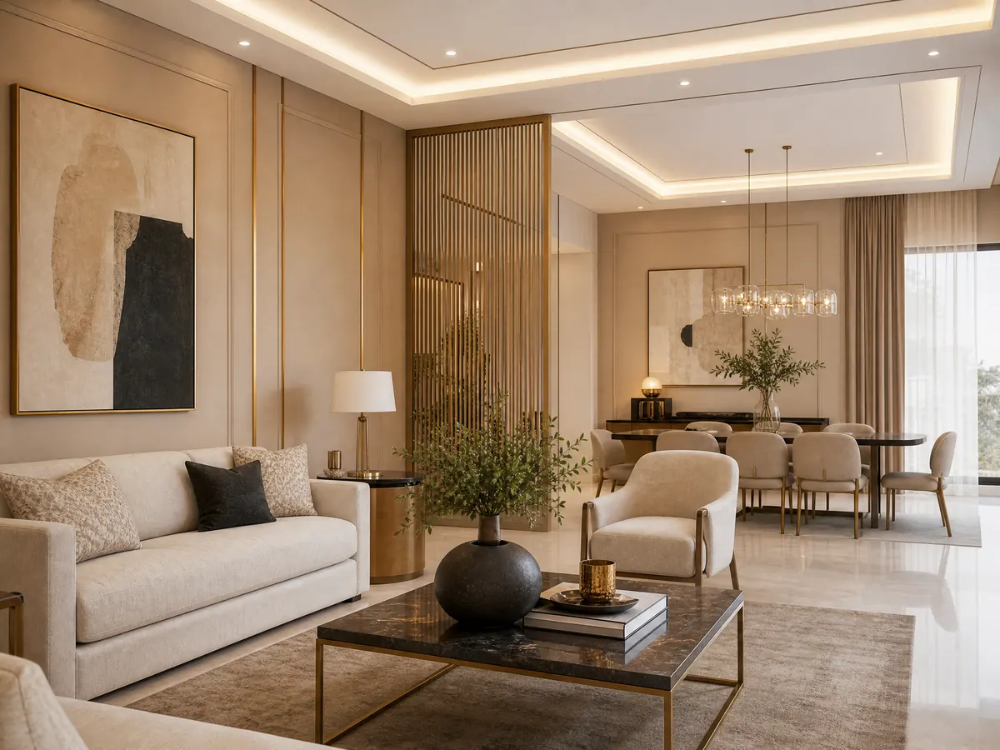

6 معايير لاختيار فني دهانات وديكورات الرياض 053 116 9312
فني دهانات وديكورات الرياض هو ما يبحث عنه كثير من أصحاب المنازل عند تجديد المساحات أو تجهيز منزل جديد، لأن جمال المكان لا يعتمد على اللون وحده، بل على تناسق التشطيبات مع الأثاث والإضاءة وطبيعة كل غرفة، والاختيار الصحيح يبدأ بتحديد احتياجاتك والنتيجة التي ترغب في الوصول إليها.
وتقدم ديكورات الأحلام حلولا متنوعة للديكور الداخلي في الرياض، تشمل الجبس بورد وبديل الرخام وورق الجدران والباركيه والتكسيات الخشبية والشيبورد، ويساعدك تحديد الخدمات المطلوبة من البداية على تنسيق عناصر المكان بصورة متكاملة ومعرفة تفاصيل التنفيذ قبل اتخاذ القرار، وإذا كنت تحتاج إلى أعمال دهانات أيضا فمن الأفضل التأكد من توفر الخدمة ضمن نطاق العمل المطلوب قبل الاتفاق.
فني دهانات وديكورات الرياض
قبل اختيار فني دهانات وديكورات الرياض المناسب حدد ما إذا كنت تحتاج إلى تجديد الدهانات فقط أم إلى تطوير شكل الغرف من خلال إضافات ديكورية وتشطيبات متناسقة، فالتخطيط المسبق يساعد على توضيح المطلوب ومقارنة العروض بناء على تفاصيل العمل وليس السعر وحده:
- حدد هدف التجديد: هل تريد تغيير ألوان الجدران، أم إضافة جدار مميز، أم تحديث السقف والأرضيات والديكور الداخلي.
- اختر التشطيبات المناسبة: تتنوع الخيارات بين الجبس بورد وبديل الرخام وورق الجدران والتكسيات الخشبية، ولكل منها شكل واستخدام مختلف.
- اهتم بتناسق التفاصيل: اختيار الخامات والألوان والإضاءة بصورة متكاملة يساعد على تحقيق مظهر منظم ومتناسق.
- اطلب تفاصيل واضحة: قبل التنفيذ، تأكد من معرفة نطاق العمل والخامات المطلوبة والخطوات المتوقعة والتكلفة.
- راجع الخدمات الفعلية: إذا كنت تبحث عن دهانات وديكورات معا، فتحقق من توفر كل خدمة لدى الجهة التي ستتعاقد معها.
شاهد الآن: معلم دهانات شرق الرياض: احترافية وأسعار مناسبة.
كيف تختار ألوان الدهانات والديكور المناسبة؟
اختيار فني دهانات وديكورات الرياض ضروري جدا للحصول على الجودة المناسبة، كما أن الألوان من أهم مراحل تجديد المنزل لأن الدرجة المناسبة قد تجعل الغرفة أكثر هدوءا أو حيوية بحسب طبيعة الاستخدام والإضاءة والأثاث، ومن الأفضل التفكير في شكل المساحة بالكامل قبل اعتماد لون واحد أو خامة منفصلة:
- ابدأ بطبيعة الغرفة: الألوان المناسبة لغرفة النوم قد تختلف عن الخيارات التي تفضلها في مجلس الضيوف أو غرفة المعيشة.
- راع الإضاءة: قد يبدو اللون مختلفا تحت الإضاءة الطبيعية مقارنة بالإضاءة الصناعية، لذلك من الأفضل تقييمه في ظروف قريبة من الاستخدام اليومي.
- نسق اللون مع الأثاث: راجع ألوان الأرضيات والستائر والأثاث قبل اختيار درجة الجدران أو الخامة الديكورية.
- استخدم التباين باعتدال: يمكن تخصيص جدار واحد بلون أو خامة مختلفة لإبراز جزء من الغرفة دون ازدحام بصري.
- اجمع الخامات بانسجام: يمكن دمج الخشب أو بديل الرخام أو ورق الجدران مع بقية عناصر الديكور بشرط تناسب الألوان والأنماط.
اقرأ أيضًا: ما الفرق بين الشيبورد وبديل الشيبورد؟
شركة فني دهانات
عند البحث عن شركة فني دهانات، من المهم معرفة نوع الخدمات التي تقدمها الشركة بالفعل، وهل تشمل تجهيز الجدران والطلاء أم تركز على عناصر الديكور والتشطيبات الداخلية، وهذا التحقق يجنبك اختلاف التوقعات بعد بدء العمل ويساعدك على اختيار الجهة المناسبة لمشروعك:
- تحديد الخدمة المطلوبة: اكتب الأعمال التي تحتاج إليها بوضوح، مثل دهان الجدران أو تركيب الجبس بورد أو ورق الجدران أو بديل الرخام.
- معرفة الخامات: اسأل عن أنواع المواد المقترحة ومدى ملاءمتها للمكان والاستخدام المتوقع.
- توضيح مراحل التنفيذ: اتفق على ترتيب الأعمال، خصوصا إذا كان المشروع يجمع بين أكثر من نوع من التشطيبات.
- الاتفاق على التكلفة: اطلب تفاصيل السعر وما يشمله من مواد وتركيب وأعمال إضافية قبل بدء التنفيذ.
- التأكد من توفر الخدمة: لا تفترض أن كل شركة ديكور تنفذ أعمال الدهانات؛ تحقق من ذلك بشكل مباشر.
ديكورات الجدران التي تغير شكل المكان
لا يتطلب تجديد الغرفة تغيير كل عناصرها ففي بعض الحالات يمكن لتحديث جدار واحد أو إضافة خامة مميزة أن يحدث فرقا واضحا في المظهر، ويتوقف الاختيار على اختيار أفضل فني دهانات وديكورات الرياض ومساحة الجدار وطبيعة الأثاث والميزانية المخصصة للتجديد:
- ورق الجدران: يتوفر بتصاميم متنوعة تناسب الأذواق العصرية والكلاسيكية، ويمكن استخدامه لإبراز جدار محدد.
- بديل الرخام: يمنح الجدران مظهرا أنيقا، وتعرض ديكورات الأحلام هذه الخدمة ضمن خياراتها للديكور الداخلي.
- التكسيات الخشبية: تضيف ملمسا بصريا دافئا، ويمكن تنسيقها مع ألوان الجدران والأثاث.
- الشيبورد: من الخيارات التي توفرها الشركة للأسقف والجدران، ويعتمد اختيار تصميمه على شكل المساحة والنتيجة المطلوبة.
- الجبس بورد: يمكن استخدامه في تصميمات الأسقف والجدران لإضافة تفاصيل معمارية تتناسب مع أسلوب المكان.
الجبس بورد وبديل الرخام والتكسيات الخشبية
إذا كنت ترغب في تحديث المجلس أو غرفة المعيشة أو مدخل المنزل، فقد يكون الجمع بين أفضل فني دهانات وديكورات الرياض
والعناصر الديكورية المحددة أفضل من إضافة خامات كثيرة في مكان واحد، والأهم أن تكون كل إضافة مناسبة لمساحة الغرفة ومتناسقة مع بقية التشطيبات:
- الجبس بورد: توفر ديكورات الأحلام خدمة تركيب الجبس بورد للأسقف والجدران بتصميمات عصرية وتشطيبات دقيقة.
- بديل الرخام: خيار لمن يرغب في مظهر أنيق للجدران، وتعرض الشركة هذه الخدمة ضمن أعمالها.
- التكسيات الخشبية: تضيف بعدا بصريا للمساحة، ويمكن توظيفها في التصميم بحسب شكل الجدار والأثاث.
- ورق الجدران: يساعد على إدخال نقوش أو ألوان مختلفة دون الاعتماد على الطلاء وحده.
- الباركيه: توفر الشركة خدمة تركيب الباركيه بألوان وخامات متنوعة لتنسيق الأرضيات مع بقية عناصر المكان.
خطوات التخطيط لمشروع الدهانات والديكور
التخطيط الجيد يساعد على تقليل التعديلات غير المتوقعة ويجعل الاتفاق مع فني دهانات وديكورات الرياض أكثر وضوحا، وإذا كان المشروع يشمل أكثر من عنصر، فمن الأفضل تحديد ترتيب التنفيذ قبل شراء الخامات أو بدء التركيب:
- الخطوة الأولى: تحديد الأولويات ابدأ بتحديد الغرف والعناصر التي تحتاج إلى تجديد، ثم رتبها حسب الأهمية والميزانية.
- الخطوة الثانية: اختيار التصميم، حدد الألوان والخامات التي تتناسب مع الأثاث والإضاءة وطبيعة المساحة.
- الخطوة الثالثة: توضيح نطاق العمل. اتفق على العناصر التي ستنفذها الشركة، وما إذا كانت هناك أعمال أخرى تحتاج إلى جهة متخصصة.
- الخطوة الرابعة: معرفة التكلفة اطلب عرضا يوضح تفاصيل الأعمال والخامات والتكاليف الإضافية إن وجدت.
- الخطوة الخامسة: مراجعة النتيجة افحص التشطيبات بعد انتهاء العمل وتأكد من تنفيذ العناصر المتفق عليها.
اطلع على: أفضل معلم دهانات وديكورات بالرياض.
تواصل مع ديكورات الأحلام في الرياض
إذا كنت تريد تجديد منزلك أو تجهيز مساحة جديدة، فإن التواصل المباشر مع الفني المختص يساعدك على معرفة الخدمات المناسبة لفكرتك، وتعرض ديكورات الأحلام خدمات داخلية متنوعة مع إمكانية التواصل هاتفيا أو عبر واتساب للاستفسار عن تفاصيل المشروع وطلب عرض سعر:
- اسم الشركة: ديكورات الأحلام.
- الموقع الإلكتروني: https://decoratalahlam.com/.
- رقم الهاتف والواتساب: 0531169312.
- الموقع: الرياض، المملكة العربية السعودية.
- الخدمات المنشورة: تركيب جبس بورد، وبديل الرخام، وورق الجدران، والباركيه، والتكسيات الخشبية، والشيبورد، والديكورات الداخلية.
- رابط الخدمة: تركيب الديكورات الداخلية.
- التواصل: اشرح للشركة طبيعة المساحة والخدمات التي تحتاج إليها للاستفسار عن التفاصيل والتكلفة.
تقدم ديكورات الأحلام خيارات متعددة لتطوير المساحات الداخلية، ويمكنك بدء التواصل بتحديد ما تريد تغييره في منزلك، سواء كان جدارا أو سقفا أو أرضية أو مجموعة من عناصر الديكور لتحقق أحلامك لحقيقة ملموسة ومظهر أنيق يحسن من نفسيتك أنت وأسرتك.
الخاتمة
اختيار الفني المختص المناسب يبدأ بتحديد احتياجات المكان ومقارنة الخامات والتصميمات والتأكد من تفاصيل التنفيذ قبل الاتفاق، وإذا كنت تبحث عن تجديد متكامل للمظهر الداخلي، تقدم ديكورات الأحلام خدمات تشمل الجبس بورد وبديل الرخام وورق الجدران والباركيه والتكسيات الخشبية والشيبورد، تواصل مع الشركة على الرقم 0531169312 أو من خلال الموقع للاستفسار عن الخيارات المتاحة وطلب عرض سعر يناسب مشروعك.
الأسئلة الشائعة
من هو أفضل معلم دهانات وديكورات في الرياض؟
يعتمد اختيار المعلم المناسب على نوع العمل المطلوب وخبرته في تنفيذه ووضوح تفاصيل السعر والخامات والمدة المتوقعة، إذا كان مشروعك يجمع بين الدهانات والديكور، فتحقق من أن مقدم الخدمة ينفذ كلا الجانبين، أما ديكورات الأحلام فتوضح على موقعها خدمات الديكور الداخلي، ومنها الجبس بورد وبديل الرخام وورق الجدران والباركيه والتكسيات الخشبية والشيبورد.
ما هي أفضل شركة دهانات في السعودية؟
تختلف الشركة المناسبة بحسب المدينة ونوع الدهانات والخدمات المطلوبة، لذلك من الأفضل مقارنة نطاق العمل والخامات والتكلفة وشروط التنفيذ قبل التعاقد، كما يجب التأكد من أن الشركة تقدم الدهانات بالفعل إذا كانت هذه الخدمة أساسية في مشروعك.
كيف أحدد تكلفة الدهانات والديكورات قبل التنفيذ؟
تتحدد التكلفة حسب مساحة المكان ونوع الخامات والتصميم وعدد العناصر المطلوب تنفيذها وحالة السطح والأعمال التحضيرية اللازمة، لذلك من الأفضل طلب عرض يوضح نطاق العمل والمواد والتكاليف الإضافية قبل الموافقة، وعند التواصل مع ديكورات الأحلام، اشرح المساحة والخدمات المطلوبة، مثل الجبس بورد أو ورق الجدران أو بديل الرخام، حتى تتمكن من الاستفسار عن تفاصيل السعر المناسبة لمشروعك.
ما الخدمات التي تقدمها ديكورات الأحلام؟
تقدم ديكورات الأحلام خدمات ديكور داخلي تشمل تركيب الجبس بورد للأسقف والجدران، وبديل الرخام، وورق الجدران، والباركيه، والتكسيات الخشبية، والشيبورد، إلى جانب تصميم وتنفيذ الديكورات الداخلية.
هل تبحث عن تنفيذ احترافي لمشروعك؟
نحن في ديكورات الأحلام نوفر لك أفضل الخامات وأمهر الفنيين في الرياض.
تواصل معنا عبر واتساب